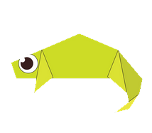

Chameleon
Interesting facts about chameleon:
1.Unlike many lizards chameleons can't regrow their tails
2.chameleon spit is very sticky
3.Smaller chameleon have faster tongues
 Teddy Bear
Teddy Bear
Interesting facts about Teddy Bear:
1.The first toy bear is believed to be made by German toy maker Margarete Steiff in 1902
2.The Oxford English Dictionary dates the first use of the term teddy bear to 1906.
3.The first British Teddy Bear Festival was held in 1989 in London
 Pigeon
Pigeon
Interesting facts about Piegeons:
1.Pigeons are incredibly complex and intelligent animals
2.Pigeons are renowned for their outstanding navigational abilities
3.Pigeons are highly sociable animals
 Panda
Panda
Interesting facts about Panda:
1.An adult panda can eat 12–38 kilos of bamboo per day!
2.Pandas have so many fans because they look cute
3.Giant pandas are good at climbing trees and can also swim
 Cicada
Cicada
Interesting facts about Cicada:
1.Cicadas have one of the longest insect lifespans
2.Cicadas make noise like toy frogs
3.Some cicadas are really tiny
 Camel
Camel
Interesting facts about Camels:
1.Camels have 3 sets of eyelids and two rows of eyelashes to keep sand out of their eyes
2.Camels can travel up yo 40 miles per hour
3.Camels cant completely shut their nostrils during a sandstrom